配置に悩む時間を、
学生の未来を拓く指導の時間へ。
先生方が最も膨大な時間と神経を費やしていた「実習先マッチング・配置作業」を完全自動化。
学生の希望・現住所/帰省先住所と17.5万件の施設情報をAIが瞬時に照合し、通学可能施設を優先配置。さらにAIが作成した仮配置はクリック操作だけでパズル感覚で直感的に移動・微調整が可能。NAVITIMEでの通勤経路照合、遠隔地のBooking.com宿泊検索、顔写真自動挿入プロフィール、承諾書回収からWeb実習評価までワンストップで支援します。
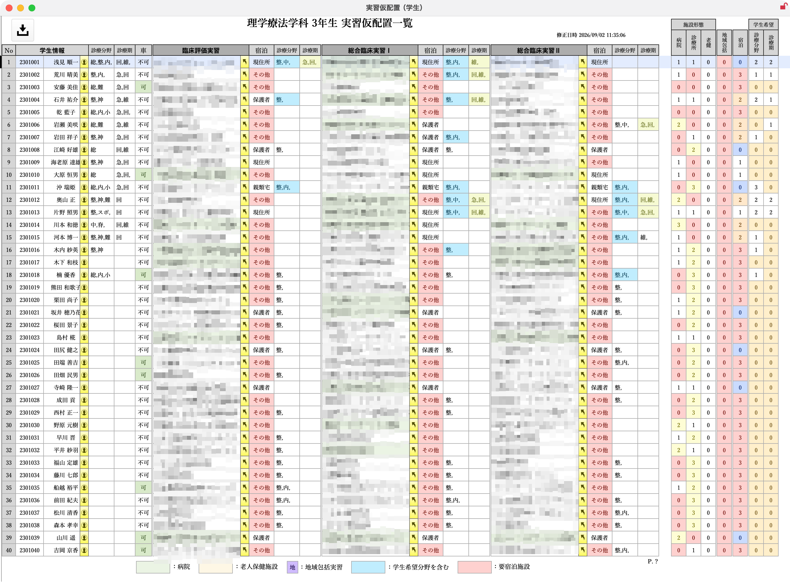
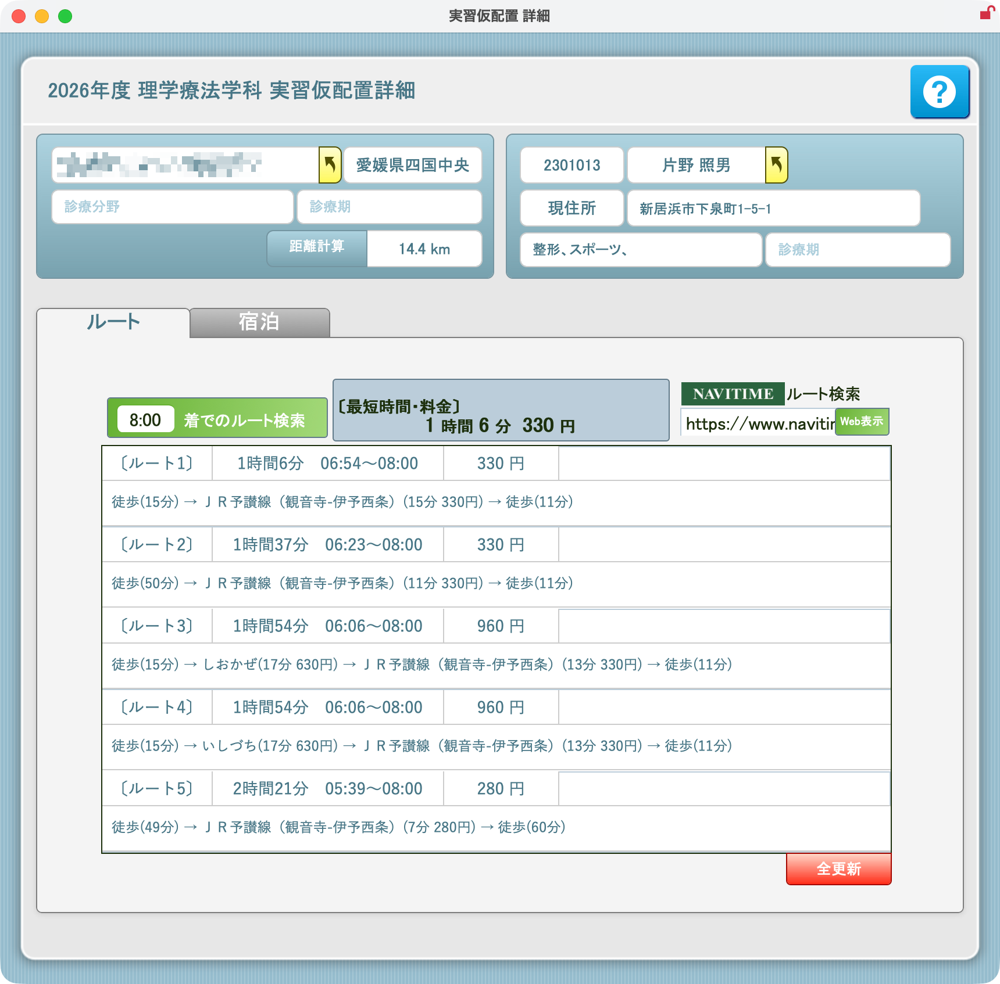
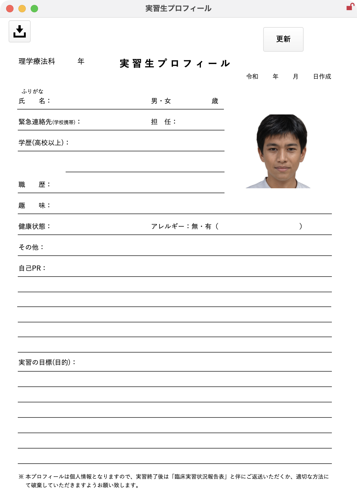
AI実習仮配置 ＆ パズル移動
学生希望と自宅・帰省先から通える施設をAIが優先自動配置。配置後はクリックだけでパズル感覚で自由にスロット移動・微調整できます。
17.5万件施設DB ＆ 承諾管理
全国17.5万件の施設DBを完備。承諾書回収、指導依頼文書の一括出力、次年度受入打診までペーパーレス管理。
実習生プロフィール ＆ 指導者Web評価
顔写真自動挿入プロフィールや施設情報用紙をワンクリック出力。指導要綱テキスト内の「□」をWebアプリの評価チェックボックスへ自動変換。
 ｜
臨床実習マネジメントDXソリューション
｜
臨床実習マネジメントDXソリューション
「数週間かかっていた配置業務が、
わずか数クリックで完了」
学生の希望・自宅・施設の受入条件をAIが瞬時に最適マッチング。通勤経路照合から遠隔地の宿泊先検索まで全自動。
学生希望・現住所 ＆ 施設受入枠の一元集約
学生管理の「事前入力」で学生の希望診療分野や時期、帰省先等を収集。施設管理の「事前入力」で受入可能人数や診療期、宿舎・車通勤条件を集約。
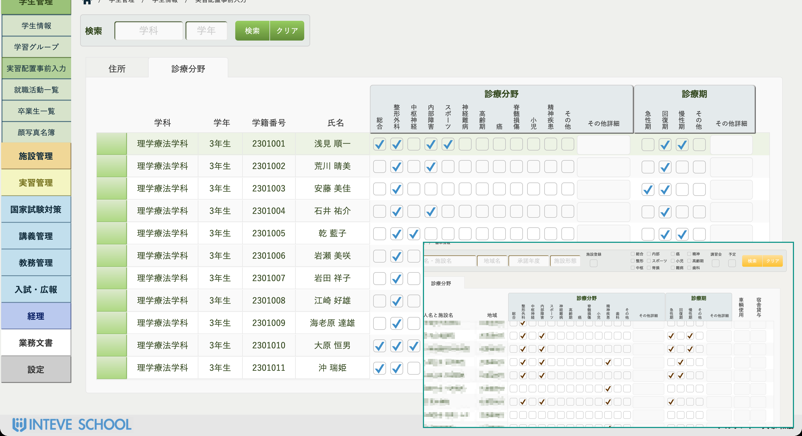
通学圏優先のAI自動スロット配置 ＆ パズル移動
「どこの学校の先生に見せても驚かれる」待望の自動仮配置。通える範囲の施設をAIが優先判定して自動配置。配置後はクリックだけでパズル感覚で直感的に移動・入れ替えが可能。
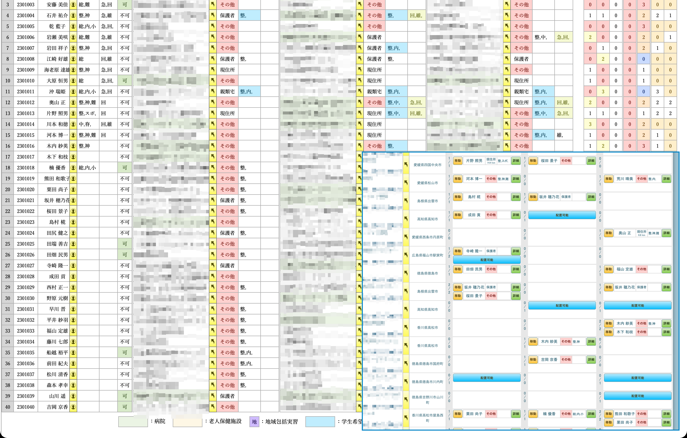
自宅・帰省先からの実通勤ルートを即時照合
現住所または帰省先住所から実習先までの通勤経路をNAVITIME APIで自動検索。「8:00着」指定での所要時間・乗換回数・運賃を瞬時に算出。Web地図とも即連携。
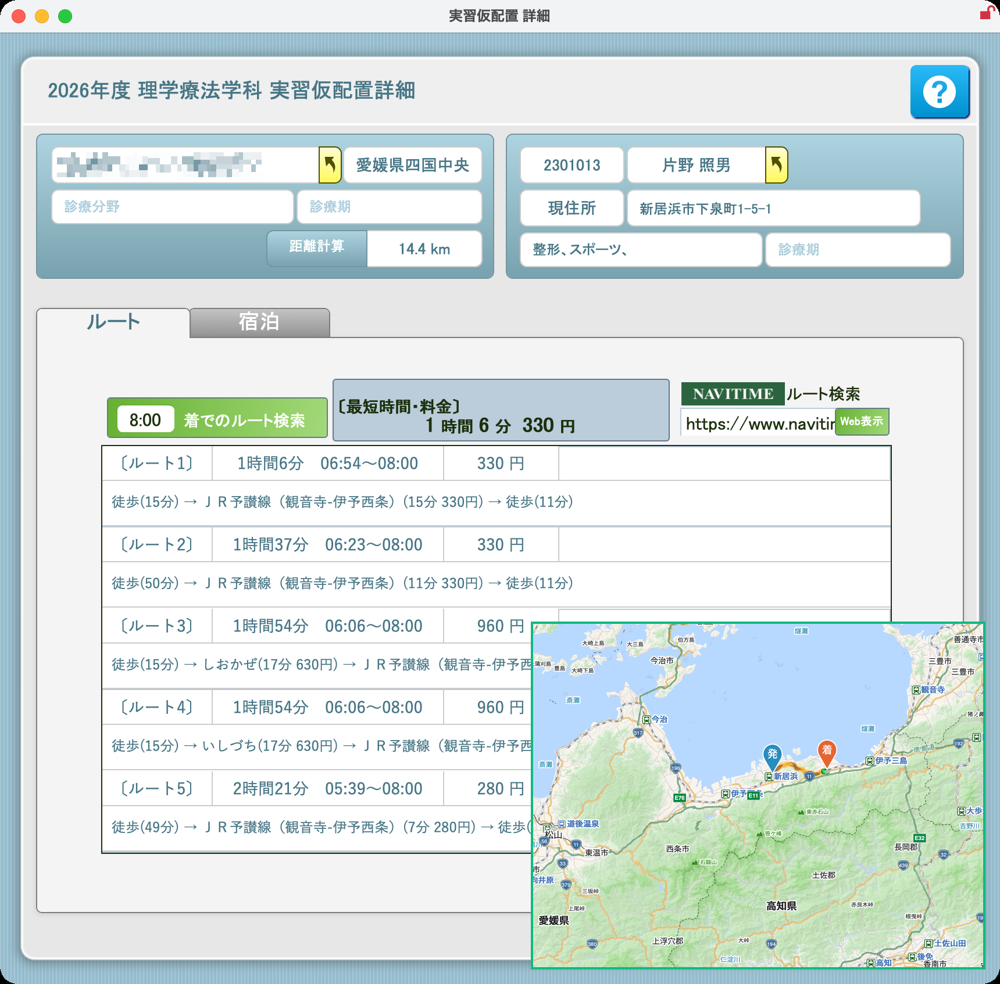
遠隔地実習の近隣宿泊先・ホテルを自動一覧化
自宅から通えない遠隔地・地方実習でも安心。Booking.com APIやGoogleと連動し、実習施設周辺のホテル・宿舎候補を評価・距離・料金順に自動リストアップ。
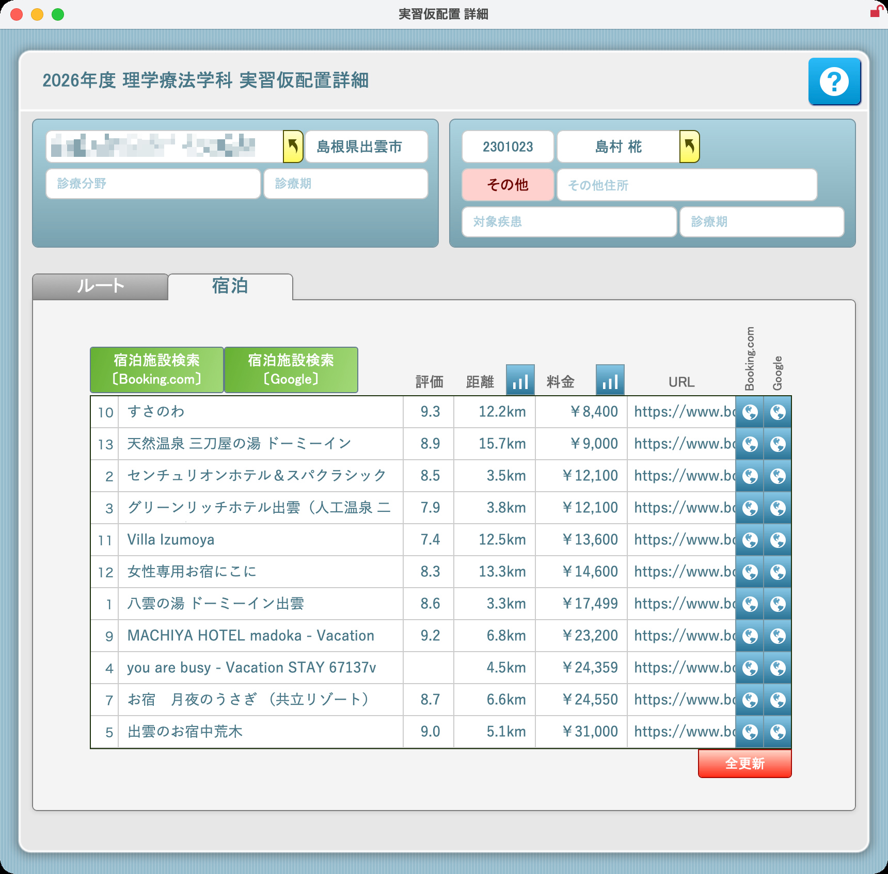
「膨大な書類作成と回収管理から、教員を完全に解放」
顔写真入りプロフィールから承諾書・依頼状一括作成、学生配布用紙、INTEVE LINK評価管理までワンストップ。
施設提出用 実習生プロフィール自動発行
学生DBに登録された顔写真が帳票の所定位置へ自動挿入。基本情報、緊急連絡先、血液型、抗体検査結果、希望分野まで完全網羅したプロフィールをワンクリック出力。
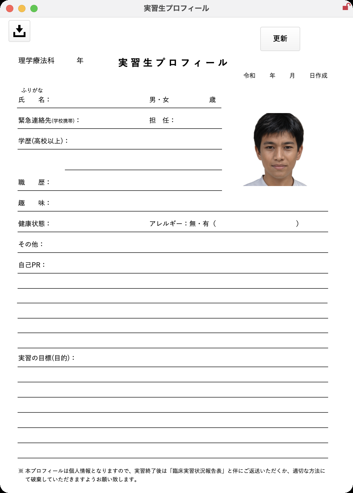
臨床実習施設情報用紙 ＆ 実習生一覧
学生へ配布する「臨床実習施設情報用紙」を美しくレイアウト出力。施設概要、指導体制、交通アクセス、宿舎・車通勤、持参物を整理。学内実習生一覧も即座に出力。
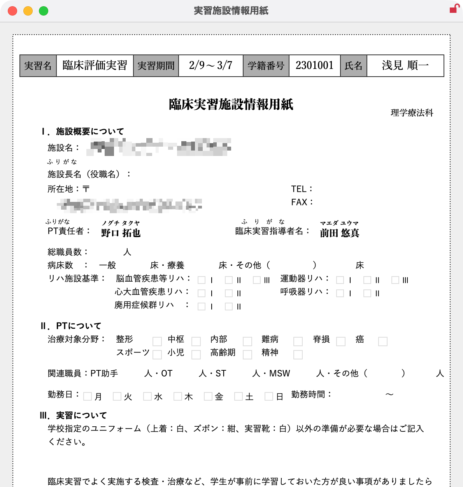
受入承諾書回収 ＆ 指導依頼文書の一括出力
施設ごとの承諾書回収状況、実習指導者会議招待、指導者講習会の受講歴を一元管理。宛先（代表者/責任者/実習指導者）ごとの公印省略正式依頼文書を一括印刷。次年度承諾依頼も一括送信。
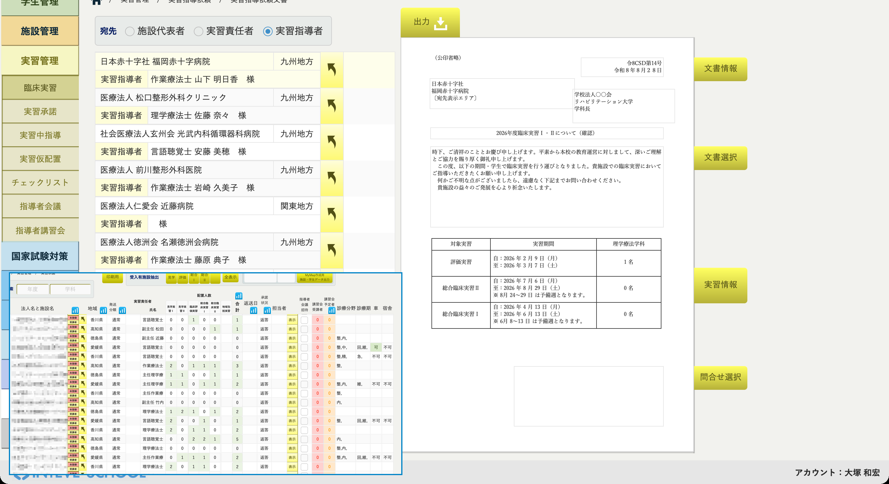
評価チェックリスト ＆ 実習指導者Web評価連携
社会的・認知・精神運動スキルの評価基準を自由に登録。指導要綱テキスト内の「□」を自動検知してWeb評価チェックボックスに変換。実習指導者がスマホ/iPadから迷わず入力。
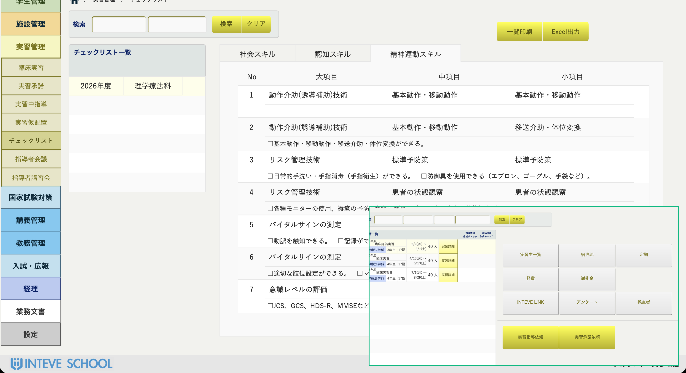
導入で得られる3つの劇的インパクト
教員の配置ストレスと膨大な事務負担を劇的に解消し、質の高い実習指導と学生フォローに注力できる環境を実現します。
数週間かかっていた配置作業を数時間へ圧縮。通学可能施設をAIが優先判定して自動スロット配置。
顔写真自動挿入プロフィール、施設情報用紙、承諾書回収、正式指導依頼文書を一括作成。
NAVITIMEで8:00着通勤経路、Booking.comで近隣ホテルを自動判定し安心を完全担保。
柔軟な運用基盤（FileMaker ✕ クラウド）
校内オンプレミス運用からクラウド（AWS）共有、教員のiPad利用まで安定稼働。学校独自の帳票や実習規程に合わせた個別カスタマイズ開発も自在です。
多彩な医療・リハビリ専門職の実習に対応
既存の施設リスト・学生名簿を受領し初期整理
受入枠・診療分野・実習期・通勤条件を投入
先生方向け仮配置レクチャー・シミュレーション
経路照合・承諾書・正式依頼状の一括出力開始
17.5万件 施設DB標準搭載
全国の病院・施設マスター完備
手厚い導入・データ移行伴走
名簿・過去実績の移行を完全支援
高信頼セキュリティ
学生個人情報・暗号化通信を保護
貴校の施設リスト・学生条件で実際のAI仮配置をお試しいただけます
最短3営業日でトライアル環境をご用意。お気軽にお問い合わせください。
｜
Web: https://creativesd.net